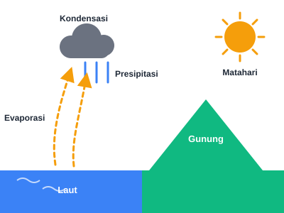
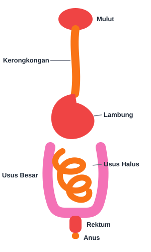
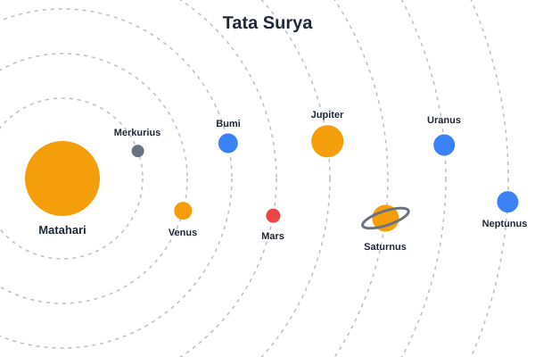
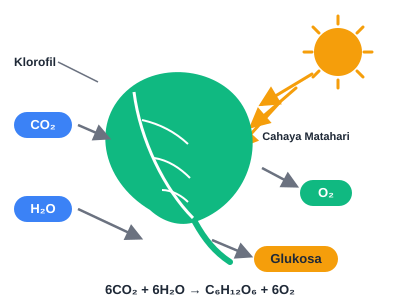
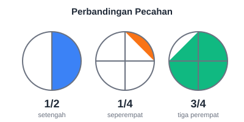
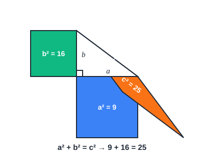

Sains
Siklus Air
Siklus hidrologi: evaporasi dari laut, kondensasi menjadi awan, presipitasi sebagai hujan, dan aliran air kembali ke laut.
Buka SVG →Koleksi 6 ilustrasi vektor flat-design untuk pembelajaran sains dan matematika. Ringan, skalabel, dan siap dipakai di media ajar, LMS, maupun presentasi.

Siklus hidrologi: evaporasi dari laut, kondensasi menjadi awan, presipitasi sebagai hujan, dan aliran air kembali ke laut.
Buka SVG →
Organ pencernaan manusia: mulut, kerongkongan, lambung, usus halus, usus besar, rektum, dan anus.
Buka SVG →
Matahari dan delapan planet pada garis orbitnya: Merkurius, Venus, Bumi, Mars, Jupiter, Saturnus, Uranus, Neptunus.
Buka SVG →
Daun mengolah cahaya matahari, CO₂, dan air menjadi glukosa serta oksigen, lengkap dengan persamaan reaksinya.
Buka SVG →
Visualisasi pecahan 1/2, 1/4, dan 3/4 dalam diagram lingkaran untuk membandingkan besar pecahan secara intuitif.
Buka SVG →
Bukti visual a² + b² = c² dengan persegi pada setiap sisi segitiga siku-siku, memakai tripel Pythagoras 3-4-5.
Buka SVG →{kind=link}
{kind=link}
{kind=link}
{kind=link}
{kind=link}
{kind=link}